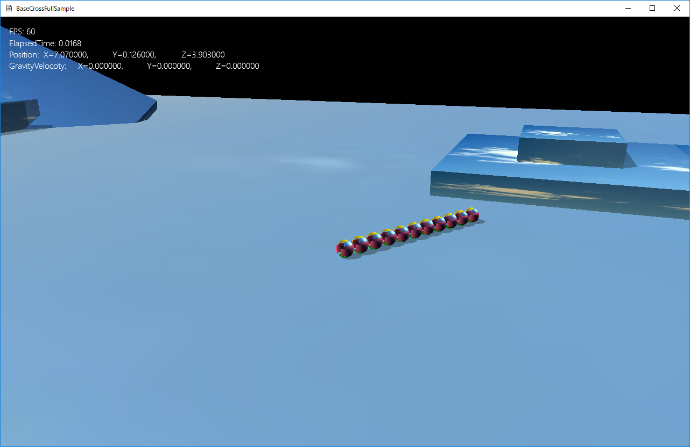

図1205a
class ChildSphere : public GameObject {
weak_ptr<GameObject> m_Parent;
Vec3 m_VecToParent;
//ステートマシーン
unique_ptr< StateMachine<ChildSphere> > m_StateMachine;
public:
//構築と破棄
ChildSphere(const shared_ptr<Stage>& StagePtr,
const shared_ptr<GameObject>& Parent,
const Vec3& VecToParent
);
virtual ~ChildSphere();
//初期化
virtual void OnCreate() override;
//操作
virtual void OnUpdate() override;
//親を追いかける処理
void SeekParent();
//宙刷りになってるかどうかのチェック
bool IsHang();
//アクセサ
const unique_ptr<StateMachine<ChildSphere>>& GetStateMachine() {
return m_StateMachine;
}
};
void ChildSphere::OnCreate() {
auto ptrTrans = GetComponent<Transform>();
ptrTrans->SetScale(Vec3(0.25f));
ptrTrans->SetQuaternion(Quat());
//CollisionSphere衝突判定を付ける
AddComponent<CollisionSphere>();
//重力をつける
auto ptrGra = AddComponent<Gravity>();
//無効にしておく
ptrGra->SetUpdateActive(false);
auto ptrParent = m_Parent.lock();
if (ptrParent) {
auto posTarget = ptrParent->GetComponent<Transform>()->GetPosition();
posTarget += m_VecToParent;
ptrTrans->SetPosition(posTarget);
}
//中略
//ステートマシンの構築
m_StateMachine.reset(new StateMachine<ChildSphere>(GetThis<ChildSphere>()));
//最初のステートをSeekFarStateに設定
m_StateMachine->ChangeState(DefaultState::Instance());
}
auto ptrParent = m_Parent.lock();
if (ptrParent) {
auto posTarget = ptrParent->GetComponent<Transform>()->GetPosition();
posTarget += m_VecToParent;
ptrTrans->SetPosition(posTarget);
}
void ChildSphere::SeekParent() {
auto ptrTrans = GetComponent<Transform>();
auto pos = ptrTrans->GetPosition();
auto ptrParent = m_Parent.lock();
if (ptrParent) {
auto matParent = ptrParent->GetComponent<Transform>()->GetWorldMatrix();
matParent.scaleIdentity();
Mat4x4 mat;
mat.affineTransformation(
Vec3(1.0),
Vec3(0.0),
Vec3(0.0),
m_VecToParent
);
mat *= matParent;
auto posTarget = mat.transInMatrix();
auto v = Lerp::CalculateLerp(pos, posTarget, 0.0f, 1.0f, 0.2f, Lerp::rate::Linear);
ptrTrans->SetPosition(v);
ptrTrans->SetQuaternion(mat.quatInMatrix());
}
}
１、親のワールド行列を取得
auto matParent = ptrParent->GetComponent<Transform>()->GetWorldMatrix();
２、その行列のスケーリングを1.0にする。
matParent.scaleIdentity();
３、親からの相対位置を行列化する。
Mat4x4 mat;
mat.affineTransformation(
Vec3(1.0),
Vec3(0.0),
Vec3(0.0),
m_VecToParent
);
４、３で作成した行列に親の行列を掛ける
mat *= matParent;
auto posTarget = mat.transInMatrix();
auto v = Lerp::CalculateLerp(pos, posTarget, 0.0f, 1.0f, 0.2f, Lerp::rate::Linear);
ptrTrans->SetPosition(v);
ptrTrans->SetQuaternion(mat.quatInMatrix());
void GameStage::CreateChildSphere() {
shared_ptr<GameObject> ptrTarget = GetSharedGameObject<Player>(L"Player");
int count = 0;
while (count < 10) {
ptrTarget = AddGameObject<ChildSphere>(ptrTarget, Vec3(0, 0, -0.26f));
count++;
}
}
shared_ptr<GameObject> ptrTarget = GetSharedGameObject<Player>(L"Player");
auto ptrTarget = GetSharedGameObject<Player>(L"Player");
void GameStage::OnCreate() {
try {
//ビューとライトの作成
CreateViewLight();
//固定のボックスの作成
CreateFixedBox();
//プレーヤーの作成
CreatePlayer();
//子供球体の作成
CreateChildSphere();
}
catch (...) {
throw;
}
}